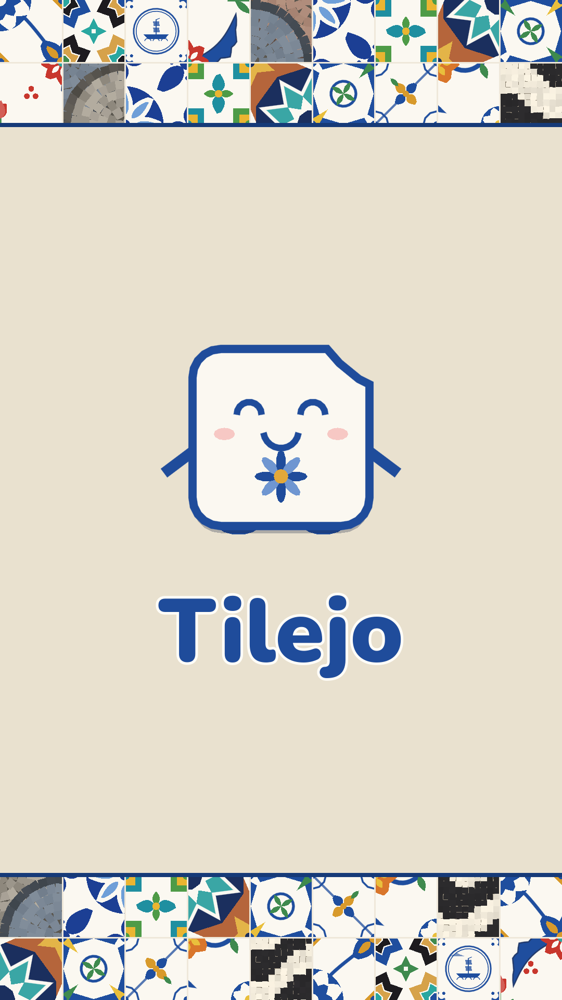

Tilejo precisa de JavaScript. · Privacy
Mais de Day in Portugal: Anfitrião IA — ferramentas grátis para alojamento local · Passatempos PT — cruzadas, sopa de letras e sudoku · Guia do Porto — Day in Portugal · Loja no Gumroad (kits de IA, posters, padrões de azulejo) · Fiverr — traduções pt-PT e configuração de IA · YouTube — Day in Portugal
